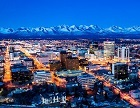

Best place

Alaska is the northernmost and westernmost state in the United States and has the most easterly longitude in the United States because the Aleutian Islands extend into the Eastern Hemisphere.[10] Alaska is the only non-contiguous U.S. state on continental North America; about 500 miles (800 km) of British Columbia (Canada) separates Alaska from Washington. It is technically part of the continental U.S., but is sometimes not included in colloquial use; Alaska is not part of the contiguous U.S., often called "the Lower 48". The capital city, Juneau, is situated on the mainland of the North American continent but is not connected by road to the rest of the North American highway system.
The state is bordered by Canada's Yukon and British Columbia to the east, the Gulf of Alaska and the Pacific Ocean to the south and southwest, the Bering Sea, Bering Strait, and Chukchi Sea to the west and the Arctic Ocean to the north. Alaska's territorial waters touch Russia's territorial waters in the Bering Strait, as the Russian Big Diomede Island and Alaskan Little Diomede Island are only 3 miles (4.8 km) apart. Alaska has a longer coastline than all the other U.S. states combined.
The most populous region of Alaska, containing Anchorage, the Matanuska-Susitna Valley and the Kenai Peninsula. Rural, mostly unpopulated areas south of the Alaska Range and west of the Wrangell Mountains also fall within the definition of South Central, as do the Prince William Sound area and the communities of Cordova and Valdez.
With its myriad islands, Alaska has nearly 34,000 miles (55,000 km) of tidal shoreline. The Aleutian Islands chain extends west from the southern tip of the Alaska Peninsula. Many active volcanoes are found in the Aleutians and in coastal regions. Unimak Island, for example, is home to Mount Shishaldin, which is an occasionally smoldering volcano that rises to 10,000 feet (3,000 m) above the North Pacific. It is the most perfect volcanic cone on Earth, even more symmetrical than Japan's Mount Fuji. The chain of volcanoes extends to Mount Spurr, west of Anchorage on the mainland. Geologists have identified Alaska as part of Wrangellia, a large region consisting of multiple states and Canadian provinces in the Pacific Northwest, which is actively undergoing continent building.
The climate in Southeast Alaska is a mid-latitude oceanic climate (Köppen climate classification: Cfb) in the southern sections and a subarctic oceanic climate (Köppen Cfc) in the northern parts. On an annual basis, Southeast is both the wettest and warmest part of Alaska with milder temperatures in the winter and high precipitation throughout the year. Juneau averages over 50 in (130 cm) of precipitation a year, and Ketchikan averages over 150 in (380 cm).[23] This is also the only region in Alaska in which the average daytime high temperature is above freezing during the winter months. The climate of Anchorage and south central Alaska is mild by Alaskan standards due to the region's proximity to the seacoast. While the area gets less rain than southeast Alaska, it gets more snow, and days tend to be clearer. On average, Anchorage receives 16 in (41 cm) of precipitation a year, with around 75 in (190 cm) of snow, although there are areas in the south central which receive far more snow. It is a subarctic climate (Köppen: Dfc) due to its brief, cool summers.